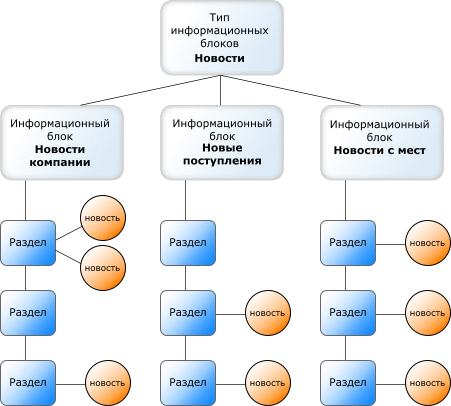
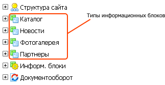

Информационные блоки - модуль, позволяющий управлять и каталогизировать различные типы (блоки) однородной информации. Примерами информационных блоков могут быть:
Часто обновляемую информацию удобнее всего размещать в виде информационных блоков.
Интернет-магазин полностью базируется на применении информационных блоков для группировки товаров. Поэтому если вы планируете открыть торговое представительство вашей компании в Интернете, ознакомьтесь с данным разделом внимательнее.
Модуль информационных блоков реализует следующую иерархическую модель построения хранилищ информации.

Типы инфоблоков создаются в форме Типы информационных блоков и отображаются в меню административной части в разделе Контент:

Размещение информации в информационных блоках выполняется через веб-интерфейс Административного раздела. В специальных полях нужно лишь указывать данные, которые запросит система. После сохранения изменений, новые данные будут размещены в соответствующем разделе сайта.
На сайте может быть создано несколько типов информационных блоков, например: новости, каталог и другие. Вы можете сами создавать новые типы информационных блоков в зависимости от тематики сайта.
Если сайт имеет несколько языковых сайтов-зеркал, то можно публиковать новости и создавать каталоги на этих же языках. Материалы будут автоматически размещены в соответствующем сайте. Например, если при создании раздела новостей (информационного блока) вы укажете, что сообщение создаётся для английского сайта, то данный раздел будет показан только в английском сайте-зеркале.
Для начала работы вам необходимо настроить типы информационных блоков, которые будут присутствовать на сайте. Для каждого типа нужно указать, требуется ли группировать элементы данного типа по различным категориям. Примером типа с возможностью группировки является каталог продукции, когда продукты можно объединять в различные группы. Например, товар Видеоплеер можно привязать к группам "Бытовая техника" и "Аудио- и видеотехника".
| © «Битрикс», 2001-2008, «1C-Битрикс», 2008 | 1С-Битрикс: Управление сайтом |